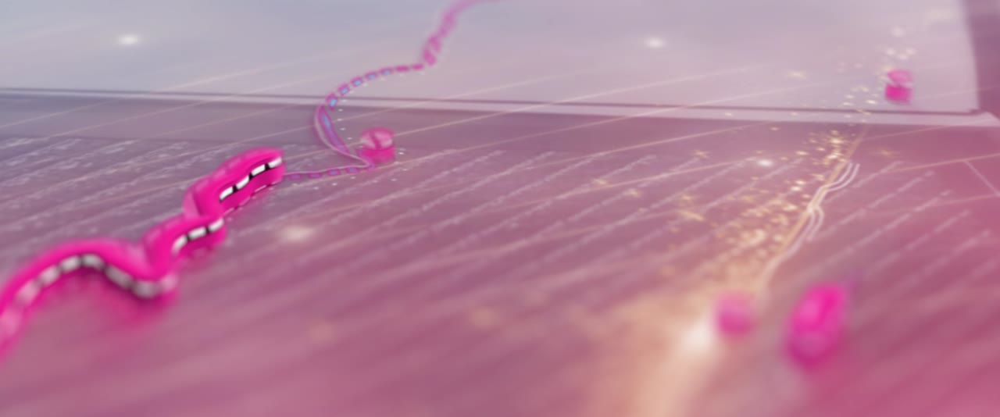

An extended event collection covering the opening, speaker bumpers, ceremonial moments and performance visuals.
WATCH PREVIEWWATCH ORIGINAL (opens in a new tab)OPEN EVENT COLLECTION (opens in a new tab)Malam Bakti Santri untuk Negeri
VIDEO PREVIEWVISUAL DIRECTION
- Opening and speaker introductions
- Ceremonial and performance screen content
- A coordinated collection of stage loops and bumpers
VIEW ALL FILES (28)
- SAJADAH PANJANG PENGABDIAN SANTRI.mp4 (opens in a new tab)
- 12x5 main_REV1.jpg (opens in a new tab)
- VISUAL AYAT AL-QURAN.mp4 (opens in a new tab)
- BAKTI SANTRI PAS 2 MNT .mp4 (opens in a new tab)
- VISUAL LAGU KRASAN MONDOK.mp4 (opens in a new tab)
- Bumper Putri Ariani.mp4 (opens in a new tab)
- Bumper Speech Menko 2.mp4 (opens in a new tab)
- Bumper Pembacaan Al-Quran (opens in a new tab)
- Bumper Out.mp4 (opens in a new tab)
- Bumper Opening (opens in a new tab)
- Bumper Pembicara_MC_7.mp4 (opens in a new tab)
- Glorifikasi_Draft 2.mp4 (opens in a new tab)
- Bumper Pembaca Doa.mp4 (opens in a new tab)
- Orkestra.mp4 (opens in a new tab)
- Pembicara Prabowo.mp4 (opens in a new tab)
- Bumper Selamat Datang final.mp4 (opens in a new tab)
- Looping.mp4 (opens in a new tab)
- Bumper In.mp4 (opens in a new tab)
- LOOPING MAN ANA.mp4 (opens in a new tab)
- LOOP LAGU TERUSKAN LANGAH BAIKMU.mp4 (opens in a new tab)
- LOOP LAGU MIMPI .mp4 (opens in a new tab)
- LOOP LAGU I'TIRAF.mp4 (opens in a new tab)
- LOOP SHOLAWAT ASGHIL.mp4 (opens in a new tab)
- IND RAYA VERSI BENDERA.mp4 (opens in a new tab)
- Bumper Pembicara_Menag_7.mp4 (opens in a new tab)
- YALAL WATHON ONLY VISUAL TEXT.mp4 (opens in a new tab)
- INDONESIA RAYA ONLY VISUAL TEXT.mp4 (opens in a new tab)
- MARS HSN ONLY VISUAL TEXT.mp4 (opens in a new tab)